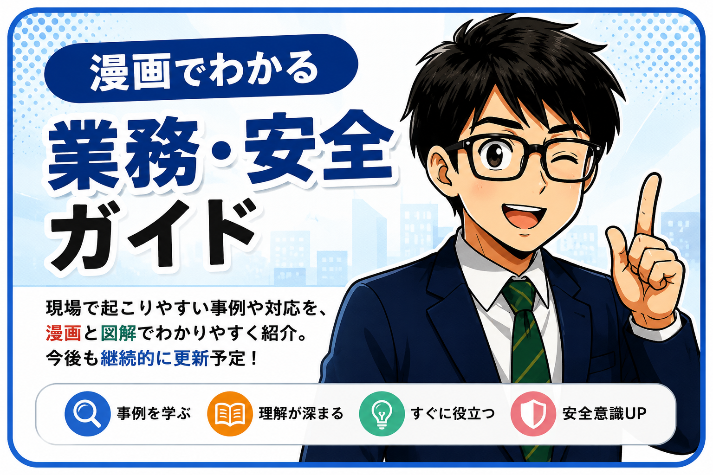

漫画でわかる業務・安全ガイド
現場で起こりやすい事例や対応を、漫画と図解でわかりやすく紹介。新人さんからベテランまで、日々の業務に役立つ内容を更新していきます。
・欠勤・退職者の確認
・新入社員紹介
・労働環境改善について協議
・構内事故防止のため白線引き直しを要望
・会社決定事項は早めの周知を要望
・新人乗務員教育期間の見直しを提案
・はぐくみ年金について、導入過程への説明不足を指摘し、加入後の不安の声も報告
・洗車備品について、個人所有備品の紛失が多発しているため、備品は各自で用意・管理をお願いする
開催日時：6月24日・25日、明け番集会後8時頃から開始予定
第76回定期総会
6月24日・25日、明け番集会後8時頃から開始予定
上期会計監査
「良い仕事は、良い体調から始まります。」
良質な休憩は、疲労回復と接客の向上につながります。営業と休息のバランスを考え、無理のない乗務を心がけましょう。
懇親会役員までお気軽にご連絡ください。
懇親会 会長 須賀孝志

東京の夏を代表する花火大会。浅草・隅田川周辺は大変な混雑が予想されるため、乗務・移動の際は交通規制や周辺道路の混雑情報にご注意ください。

🚨 トラブル即対応（まず確認）
トラブル対応ガイドを見る
📝 お問い合わせ（解決しない場合）
お問い合わせフォームへ